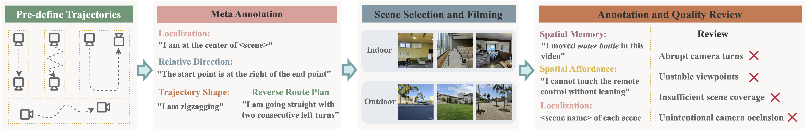
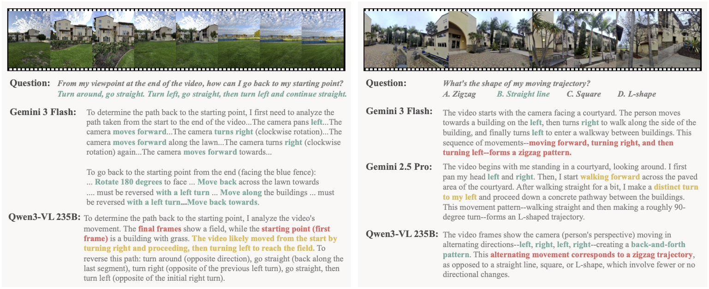
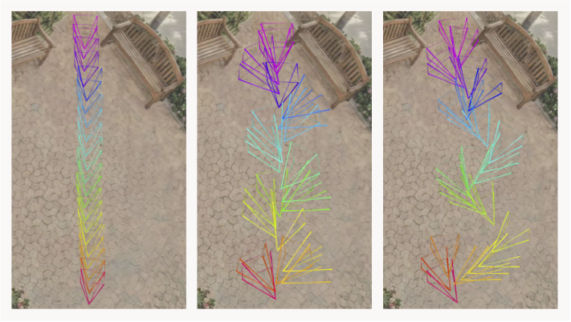
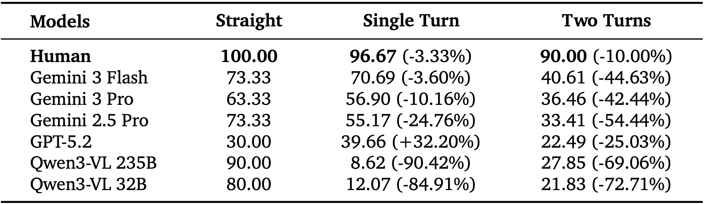
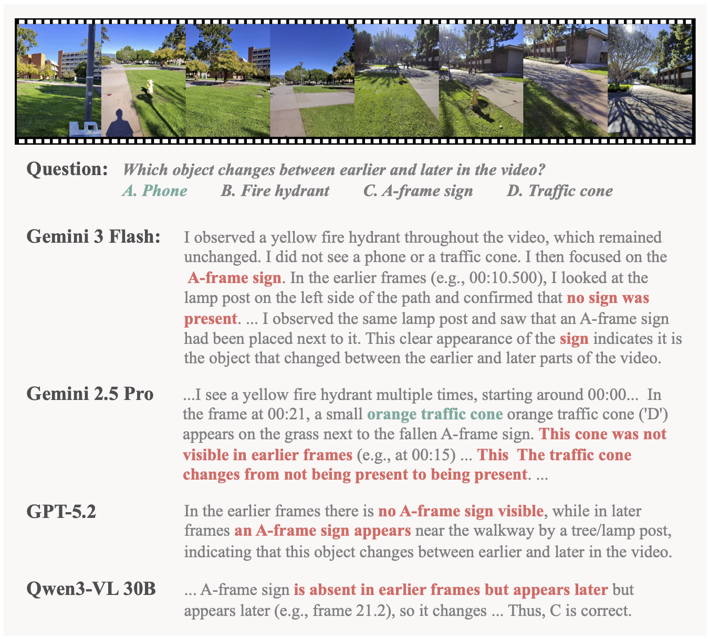
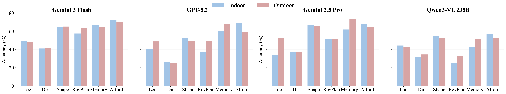

SAW-Bench
Learning Situated Awareness in the Real World
4University of Maryland, College Park · 5Amazon · 6University of California, Merced
SAW-Bench tests whether multimodal foundation models have situated awareness — the ability to reason about space, motion, and action from their own egocentric viewpoint. Across 786 real-world videos recorded with smart glasses and 2,071 human-annotated questions, even the best model trails humans by 37.66%, revealing that today's models fail to maintain a coherent observer-centric spatial state.
Situated Awareness
First benchmark evaluating observer-centric spatial reasoning from egocentric videos.
Real-World Videos
All videos are self-recorded with Ray-Ban Meta (Gen 2) glasses in real environments.
Six Core Tasks
Self-localization, route reasoning, spatial memory, and action feasibility.
Key Insight
Current models do not maintain a coherent observer-centric spatial state.
Reasoning about yourself in space
A core aspect of human perception is situated awareness, the ability to relate ourselves to the surrounding physical environment and reason over possible actions in context. However, most existing benchmarks for multimodal foundation models (MFMs) emphasize environment-centric spatial relations (relations among objects in a scene), while largely overlooking observer-centric relationships that require reasoning relative to an agent's viewpoint, pose, and motion. To bridge this gap, we introduce SAW-Bench (Situated Awareness in the Real World), a novel benchmark for evaluating egocentric situated awareness using real-world videos. SAW-Bench comprises 786 self-recorded videos captured with Ray-Ban Meta (Gen 2) smart glasses across diverse indoor and outdoor environments, along with over 2,071 human-annotated question-answer pairs. It probes a model's observer-centric understanding through six distinct awareness tasks. Our comprehensive evaluation reveals a 37.66% human-model performance gap, even for the best-performing MFM, Gemini 3 Flash. Beyond this gap, our in-depth analysis uncovers systematic failure modes: although models can exploit partial geometric cues in egocentric videos, they frequently fail to infer a coherent camera geometry, resulting in consistent spatial reasoning errors. We position SAW-Bench as a benchmark for situated spatial intelligence, moving beyond passive observation to understanding physically grounded, observer-centric dynamics.
Explore the six tasks
Pick a task to view a real example — the egocentric video, the question, the answer choices, and how a state-of-the-art model responds. The model sees only the video, with no bird's-eye map.
How the benchmark is built
Overview. SAW-Bench is designed to evaluate observer-centric spatial reasoning from egocentric videos. Unlike prior benchmarks that emphasize scene-centric or object–object relationships, SAW-Bench focuses on situated awareness: the ability to reason about space, motion, and possible actions relative to the observer's own viewpoint as it evolves over time. The benchmark comprises 786 self-recorded real-world egocentric videos captured with wearable cameras across diverse indoor and outdoor environments, paired with 2,071 human-annotated question–answer pairs. Together, the six tasks require models to maintain a coherent observer-centric spatial state, integrate egocentric motion over time, and reason beyond static visual cues.

Video collection. All videos are recorded from an egocentric perspective using Ray-Ban Meta (Gen 2) smart glasses worn by human participants. Most videos are captured as single, continuous clips. For Spatial Memory tasks, we apply limited post-processing by concatenating two short clips of the same scene — one before and one after a controlled modification — with no other temporal reordering or editing. Audio is excluded so that all reasoning is grounded solely in visual information. Collection spans diverse real-world environments, including outdoor scenes (courtyards, parking lots, lawns, plazas) and indoor scenes (lecture halls, classrooms, recreation rooms, households). Within each scene we collect ~40–60 distinct videos to densely cover tasks like Self-Localization and Route Shape, and additionally collect Spatial Memory and Spatial Affordance videos across a broader range of environments to prioritize diversity.
Collection protocol. Participants followed a lightweight recording protocol — high-level guidelines that ensure consistency across scenes while preserving natural behavior. For Self-Localization, participants recorded from a set of predefined reference locations (corners, sides, center) to cover diverse viewpoints. Beyond these coverage requirements, the protocol did not prescribe specific paths, motions, or camera poses; participants followed coarse trajectory shapes (e.g., zigzag or two consecutive turns) while retaining flexibility in how each shape was executed within the environment.

SAW-Bench Leaderboard
Click any column header to sort. Unless otherwise specified, all models process videos at 2 fps. Bold and underlined numbers indicate the best and second-best model performance in each category. * Models do not support fps-based sampling and process a fixed 32 frames per video. ‡ 8 frames per video due to compute limits.
| Model | All | Self-Localization | Relative Direction | Route Shape | Reverse Route Plan | Spatial Memory | Spatial Affordance |
|---|---|---|---|---|---|---|---|
| Baselines | |||||||
| Human Level | 91.55 | 94.00 | 89.39 | 97.62 | 93.01 | 88.50 | 79.01 |
| Chance Level (Random) | 27.49 | 34.00 | 25.90 | 21.43 | 27.51 | 28.00 | 56.17 |
| Chance Level (Frequent) | 29.55 | 38.00 | 25.90 | 27.11 | 27.51 | 27.00 | 50.62 |
| Blind LLM (GPT-5.2) | 31.34 | 38.00 | 23.02 | 36.63 | 24.02 | 38.00 | 54.32 |
| Socratic Model (GPT-5.2) | 31.34 | 40.50 | 20.62 | 41.58 | 24.02 | 32.00 | 50.62 |
| Proprietary Multimodal Foundation Models | |||||||
| Gemini 3 Flash | 53.89 | 48.50 | 41.13 | 64.84 | 61.57 | 66.00 | 70.99 |
| Gemini 2.5 Pro | 50.80 | 45.50 | 37.05 | 66.12 | 51.53 | 66.00 | 66.05 |
| Gemini 3 Pro | 45.97 | 50.00 | 38.61 | 52.01 | 36.24 | 63.00 | 61.73 |
| GPT-5.2 | 41.04 | 45.50 | 25.78 | 50.55 | 44.98 | 63.00 | 62.96 |
| Gemini 2.5 Flash | 39.79 | 44.00 | 25.30 | 57.33 | 37.99 | 49.00 | 46.91 |
| GPT-5 Mini | 33.80 | 43.50 | 27.46 | 36.08 | 22.27 | 56.00 | 49.38 |
| Open-Source Multimodal Foundation Models | |||||||
| Qwen3-VL 235B-A22B | 41.40 | 43.50 | 33.41 | 53.11 | 30.13 | 46.00 | 54.32 |
| Qwen3-VL 32B | 38.58 | 44.00 | 29.14 | 48.35 | 29.26 | 52.00 | 52.47 |
| Qwen3-VL 30B-A3B | 36.55 | 39.00 | 29.62 | 43.04 | 27.07 | 54.00 | 50.00 |
| Qwen2.5-VL 32B | 36.46 | 53.00 | 28.06 | 41.03 | 24.89 | 45.00 | 54.94 |
| Qwen2.5-VL 72B | 36.17 | 51.50 | 26.74 | 41.76 | 25.33 | 45.00 | 56.79 |
| Qwen3-VL 8B | 36.12 | 40.00 | 27.82 | 46.70 | 23.58 | 48.00 | 48.77 |
| LLaVA OneVision 72B * | 33.70 | 39.00 | 22.30 | 46.15 | 24.45 | 41.00 | 52.47 |
| InternVL3 8B * | 33.70 | 43.50 | 26.86 | 36.45 | 27.95 | 46.00 | 48.15 |
| LLaVA-Video 72B * | 32.98 | 32.50 | 23.86 | 43.04 | 24.45 | 41.00 | 53.70 |
| InternVL3 14B * | 32.69 | 49.00 | 17.27 | 45.05 | 24.02 | 54.00 | 49.38 |
| Qwen2.5-VL 7B | 31.48 | 38.50 | 19.06 | 43.59 | 26.20 | 38.00 | 49.38 |
| LLaVA-NeXT-Video 32B * | 31.24 | 41.00 | 24.46 | 35.35 | 22.27 | 34.00 | 51.23 |
| LLaVA-Video 7B * | 30.81 | 41.00 | 25.06 | 32.78 | 24.45 | 32.00 | 49.38 |
| InternVL2 40B ‡ | 30.13 | 45.00 | 17.75 | 38.28 | 24.89 | 32.00 | 54.32 |
| InternVL2 8B * | 29.84 | 43.00 | 14.99 | 41.94 | 24.89 | 40.00 | 50.00 |
| LLaVA OneVision 7B * | 29.45 | 34.50 | 20.26 | 34.80 | 25.33 | 44.00 | 49.38 |
| InternVL3 38B ‡ | 27.71 | 35.50 | 23.50 | 37.55 | 24.45 | 46.00 | 51.23 |

Findings & insights
Across 24 state-of-the-art multimodal foundation models, our experiments reveal systematic limitations in situated awareness understanding.
Camera rotation as a source of trajectory errors. We identify a systematic failure mode in Route Shape when camera rotation is decoupled from translational movement. Comparing (1) a straight path with stable head orientation, (2) the same straight path with frequent head rotations, and (3) a true zigzag trajectory: despite identical translation in (1) and (2), top models often misclassify (2) as a zigzag — Gemini 3 Flash in 60.0% of instances, Qwen3-VL 235B in 53.3%. Models justify this by erroneously attributing camera orientation shifts to physical body displacement, revealing an inability to maintain a robust observer-centric coordinate system.

Current MFMs often conflate egocentric camera rotation with translational movement.
Trajectory complexity and error accumulation. Spatial updating is inherently accumulative — errors in estimating egocentric motion compound as the observer moves. Stratifying Relative Direction by geometric complexity — Straight (pure translation), Single Turn, and Two Turns — accuracy degrades substantially as complexity increases, particularly under multiple orientation changes. While human performance remains largely stable, MFMs show significant degradation, suggesting they struggle to reliably integrate successive egocentric orientation changes over time.

Model accuracy degrades significantly as trajectory complexity increases.
Failure to maintain persistent object memory. A recurring failure across Spatial Memory tasks arises from difficulty maintaining object persistence across egocentric motion. Although models accurately describe what is visible in individual frames, they fail to reason about objects that leave the camera's field of view — inferring an object is absent earlier simply because it is not visible, treating first observation as object appearance. These errors suggest models rely on view-dependent evidence rather than maintaining a persistent world-state representation.

Persistent tracking of objects across frames remains an open challenge across models.
Effect of openness on situated awareness. Contrary to the intuition that larger, more dynamic outdoor environments increase difficulty, no consistent performance degradation is observed in outdoor scenes. Across four selected models, outdoor performance is often comparable to — and in several cases higher than — indoor performance. While outdoor scenes span larger extents, they often contain fewer objects and less clutter, reducing relational ambiguity. Spatial reasoning difficulty is therefore not monotonically correlated with scene size or openness; indoor environments can pose equally complex challenges due to higher object density and intricate layouts.

Environment openness alone is an insufficient proxy for spatial reasoning difficulty.
Toward situated spatial intelligence
Situated awareness underlies how humans continuously perceive, navigate, and act in the physical world, yet it remains insufficiently captured by existing multimodal evaluation frameworks. We introduce SAW-Bench to explicitly evaluate observer-centric situated spatial understanding in MFMs using egocentric videos. Through a systematic evaluation of 24 models, we uncover fundamental gaps in current MFMs' ability to reason about observer-centric tasks, and identify the key factors underlying these limitations. We hope this work sheds light on the development of AI systems that move beyond passive observation toward physically grounded, observer-centric, and interactive world understanding.
BibTeX
@inproceedings{li2026sawbench,
title={{SAW}-Bench: Learning Situated Awareness in the Real World},
author={Chuhan Li and Rilyn R. Han and Joy Hsu and Yongyuan Liang and Rajiv Dhawan and Jiajun Wu and Ming-Hsuan Yang and Xin Eric Wang},
booktitle={Forty-third International Conference on Machine Learning},
year={2026},
url={https://openreview.net/forum?id=8lwrYjv6r7}
}